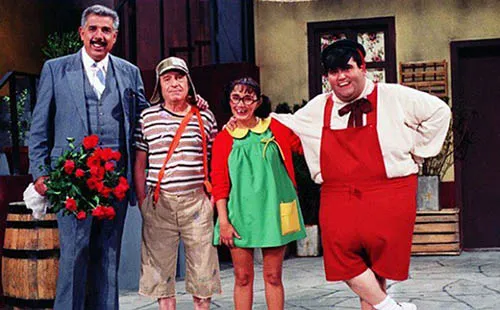

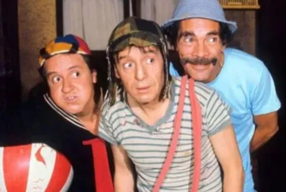
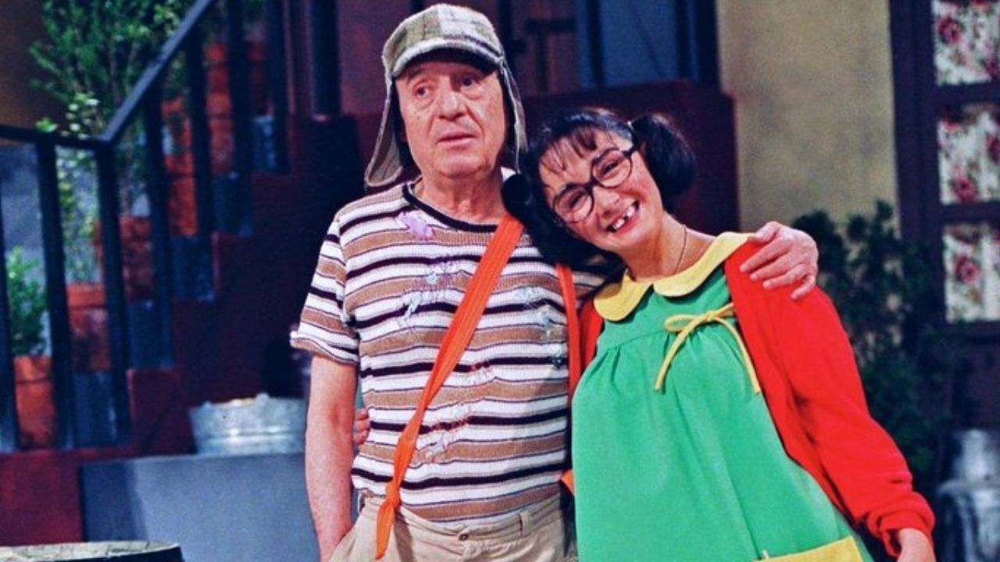
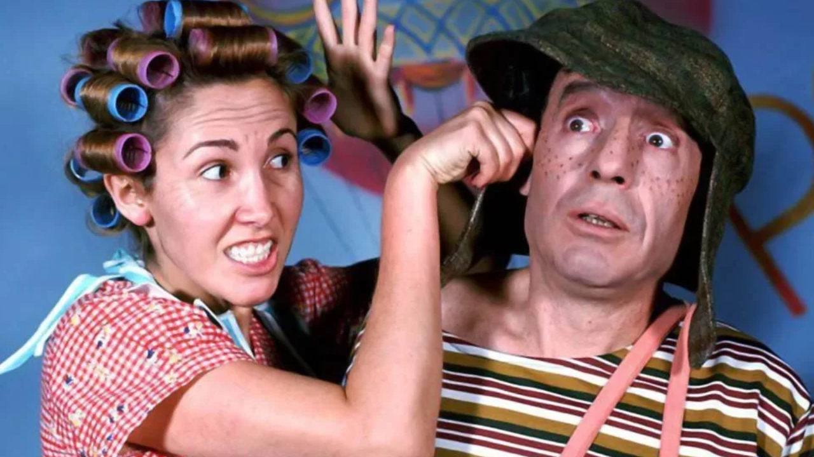
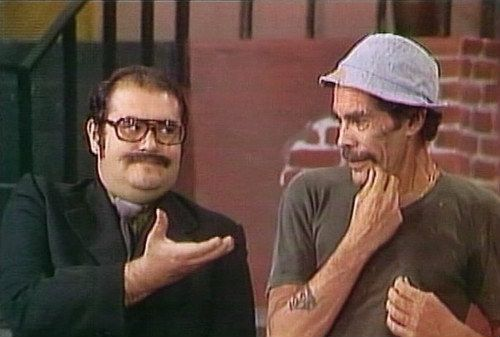
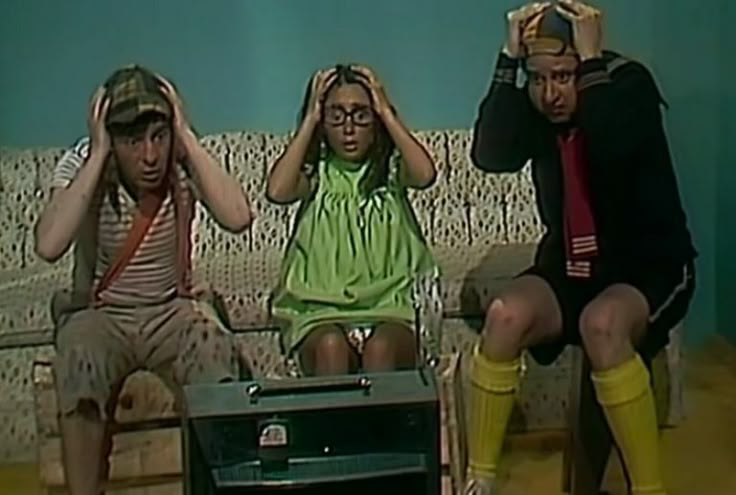
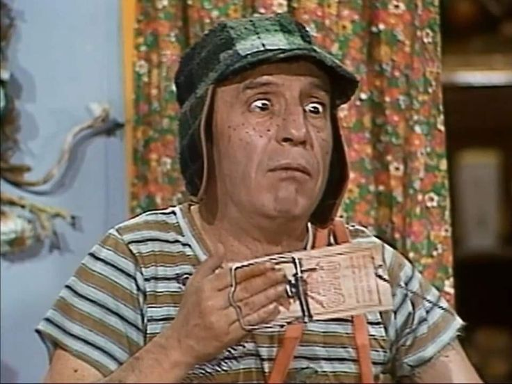
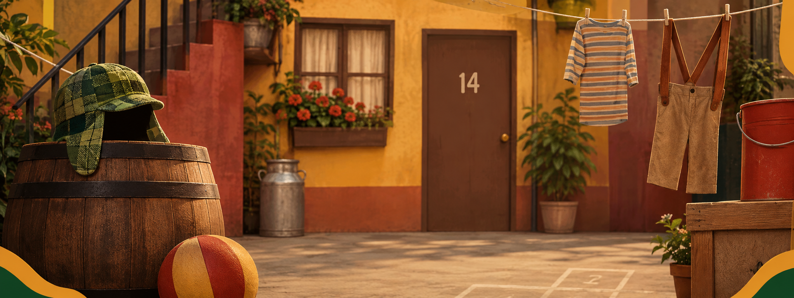
Como o humor inocente de uma vizinhança uniu gerações no mundo inteiro.
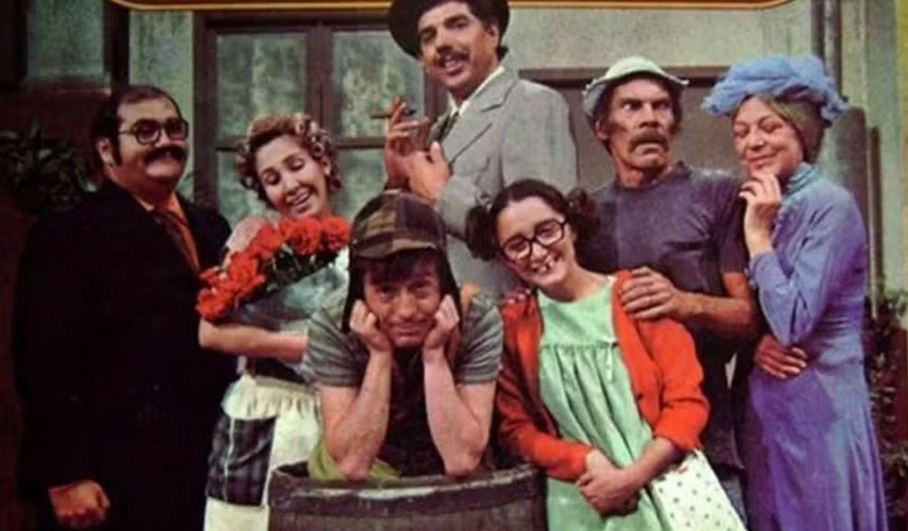
Antes de o mundo conhecer a vila, Roberto Gómez Bolaños já era um verdadeiro operário das palavras.
Conhecido nos corredores como "Chespirito" (um "Pequeno Shakespeare"), ele tinha uma genialidade rara
para escrever histórias de forma rápida. Em 1970, ao ganhar seu próprio espaço na TV, ele se viu diante
de um desafio: criar esquetes curtos o tempo todo.
Foi dessa urgência que surgiu um rascunho despretensioso. Bolaños imaginou uma criança pobre, de oito
anos, com roupas gastas, interagindo com um vendedor de balões em um parque. Era uma premissa simples,
mas que carregava um humor incrivelmente humano. No entanto, Bolaños sentiu que faltava algo. O menino
não podia viver isolado em um parque; ele precisava de um mundo. Ele precisava de uma família, mesmo que
não fosse de sangue.
Foi então que a história se mudou para um cortiço mexicano, a famosa vecindad (a vila). Para povoar esse universo, Chespirito não criou personagens aleatórios; ele criou uma engrenagem onde todos dependiam uns dos outros.
Para ser a figura paterna torta que o menino órfão nunca teve, nasceu o Seu Madruga (Ramón Valdés), um homem de bom coração, mas alérgico ao trabalho. Ele não veio sozinho: trouxe consigo a esperteza de sua filha, Chiquinha, a melhor amiga e, por vezes, a maior rival do Chaves. Para que a pobreza de Madruga e Chaves tivesse um contraste cômico, a vila precisava de vizinhos que se sentissem superiores, como Dona Florinda e seu filho Quico.
Eles não eram apenas um elenco; eram um retrato vivo da sociedade unida pelo humor.
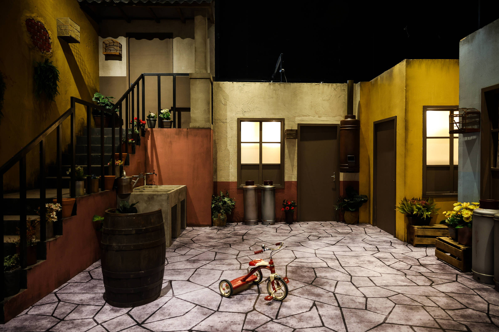
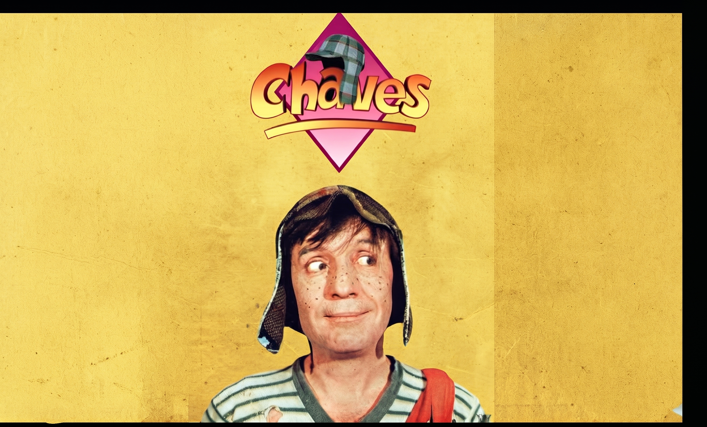
A estreia oficial com esse formato ocorreu no dia 20 de junho de 1971, pela Televisión Independiente de México (Canal 8, motivo pelo qual o personagem foi batizado de El Chavo del 8). A conexão entre esses personagens foi tão explosiva e magnética que aqueles pequenos blocos de 10 minutos romperam suas próprias barreiras. Em 1973, Chaves se tornou um seriado independente de meia hora.
O que se seguiu foi uma histeria que a TV raramente presencia. A série explodiu pela América Latina. O elenco deixou de ser um grupo de comediantes para se tornar astros com status de rockstars. Eles causavam tumultos em aeroportos, lotavam estádios do Chile à Colômbia e esgotaram duas noites seguidas no lendário Madison Square Garden, em Nova York. Eles eram aplaudidos por dezenas de milhares de pessoas em um único show.
Se a criação de Chaves foi fruto de uma necessidade, sua chegada ao Brasil em 1984 foi puro acaso. Os episódios aterrissaram no recém-criado SBT como um mero "brinde" dentro de um pacote de novelas da Televisa. Executivos olharam para os cenários de isopor e a imagem amarelada e não viram potencial. A série foi jogada no ar quase escondida, apenas como um "tapa-buraco" na programação.
Mas os engravatados esqueceram de perguntar ao público. Imediatamente, o brasileiro abraçou o seriado. O espectador viu seu próprio vizinho no Seu Madruga, a professora rígida no Girafales, o dono do imóvel no Senhor Barriga. Aquele ecossistema funcionava em português tão bem quanto em espanhol. O tapa-buraco virou um trator: nos anos 90 e 2000, Chaves atingiu o topo da audiência, desbancando superproduções milionárias e telejornais intocáveis da concorrência.
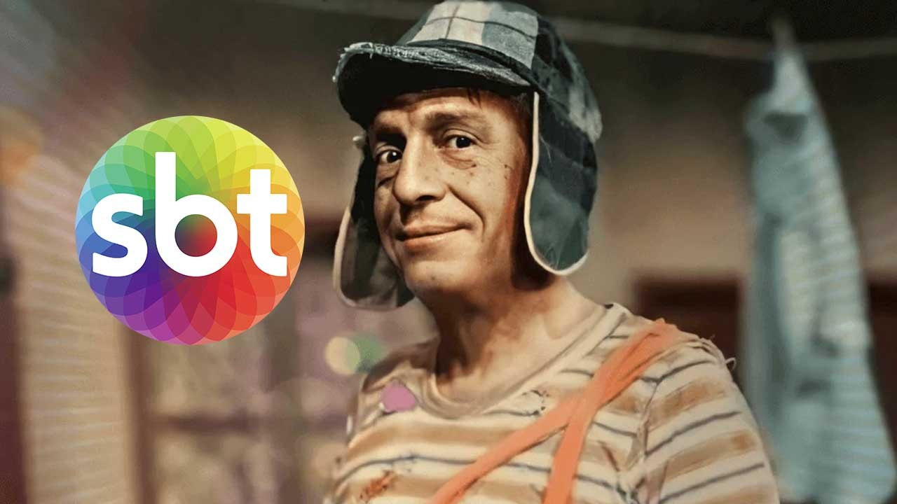







Hoje, mais de meio século após sua criação, Chaves foi traduzido para mais de 50 idiomas e transmitido da Angola à Coreia do Sul. O seriado sobreviveu à transição das TVs de tubo para a era digital e ao império do streaming.
Tudo isso porque Roberto Gómez Bolaños entendeu que o humor mais poderoso é aquele que nasce das relações humanas. No fim das contas, a trajetória dessa série nos ensina a maior lição sobre a arte: não importam os orçamentos bilionários. Foi amarrando a vida de um menino órfão ao coração de uma vizinhança inteira que um esquete criado "isso, isso, isso!" se eternizou como o seriado mais amado da história da televisão.